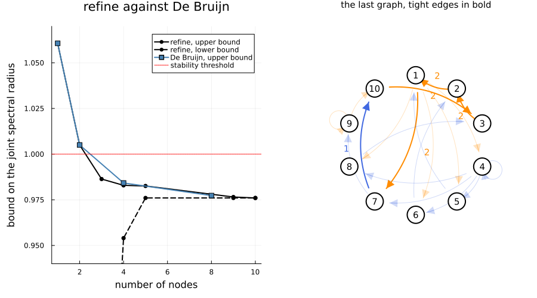

Improve my bound
In Bound the joint spectral radius of my system, a De Bruijn graph with four nodes proved stability, and left the joint spectral radius between $0.976$ and $0.984$. Here the package designs the graph: it proves stability with three nodes, and finds the exact joint spectral radius with ten. Refining the graph explains the algorithm; this page runs it.
import PathCompleteCertificates as PCC
import Clarabel
import LinearAlgebra
using Plots
const TEMPLATE = PCC.QuadraticTemplate()
const OPTIMIZER = Clarabel.OptimizerThe system
The rotation and the shear of Bound the joint spectral radius of my system.
A = [0.75 * [0.0 1.0; -1.0 0.0], 0.75 * [1.0 1.0; 0.0 1.0]]
problem = PCC.StabilityProblem(PCC.switched_system(A))One call
refine starts from the one-node graph and adds nodes where the certificate is tight. For each graph it visits, its number of nodes, the certified rate, and the lower bound read from the tight edges:
trace = PCC.refine(TEMPLATE, problem; optimizer = OPTIMIZER, depth_max = 10)
steps = [
(PCC.n_nodes(graph), certificate.rate, PCC.jsr_lower_bound(certificate)) for
(graph, certificate) in zip(PCC.graphs(trace), PCC.certificates(trace))
]7-element Vector{Tuple{Int64, Float64, Float64}}:
(1, 1.0606603622436523, 0.75)
(2, 1.0050239562988281, 0.75)
(3, 0.9863557815551758, 0.75)
(4, 0.9829082489013672, 0.9540147371355517)
(5, 0.9825611114501953, 0.9760021467165344)
(9, 0.9765176773071289, 0.9760021467165344)
(10, 0.9760026931762695, 0.9760021467165344)The rate goes below one at three nodes, one fewer than the De Bruijn graph of order 2 needed. The lower bound then rises to meet the rate, and the run stops at ten nodes with a proof that the rate is the joint spectral radius:
PCC.status(trace)OPTIMAL::RefinementStatus = 0The bounds, drawn
On the left, the two bounds of each step against the number of nodes, and the rates of the De Bruijn graphs, whose nodes double with the order; the first lower bounds, $0.75$, fall below the chart. On the right, the last graph, its tight edges in bold: every node keeps at most one tight outgoing edge, which proves the rate exact, and the tight edges form one cycle, which reads the slowest sequence $2, 2, 2, 2, 1$.
de_bruijn = [
(2^k, PCC.certify(TEMPLATE, PCC.de_bruijn(k, 2), problem; optimizer = OPTIMIZER).rate) for k in 0:3
]
left = plot(;
xlabel = "number of nodes",
ylabel = "bound on the joint spectral radius",
legend = :topright,
ylims = (0.94, 1.07),
title = "refine against De Bruijn",
)
plot!(
left,
first.(steps),
getindex.(steps, 2);
marker = :circle,
lw = 2,
color = :black,
label = "refine, upper bound",
)
plot!(
left,
first.(steps),
last.(steps);
marker = :circle,
lw = 2,
ls = :dash,
color = :black,
label = "refine, lower bound",
)
plot!(
left,
first.(de_bruijn),
last.(de_bruijn);
marker = :square,
lw = 2,
color = :steelblue,
label = "De Bruijn, upper bound",
)
hline!(left, [1.0]; color = :red, ls = :dot, label = "stability threshold")
final = last(PCC.certificates(trace))
plot(left, right; layout = (1, 2), size = (900, 500), margin = 5Plots.mm)
What it proves
is_jsr_exact confirms the proof, and the rate matches the slowest product of Bound the joint spectral radius of my system, the sequence $2, 2, 2, 2, 1$:
slowest = maximum(abs, LinearAlgebra.eigvals(A[1] * A[2]^4))^(1 / 5)
PCC.is_jsr_exact(final), final.rate, slowest(true, 0.9760026931762695, 0.9760021467165344)This page was generated using Literate.jl.